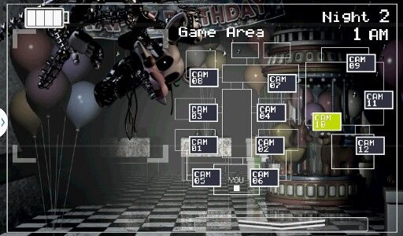
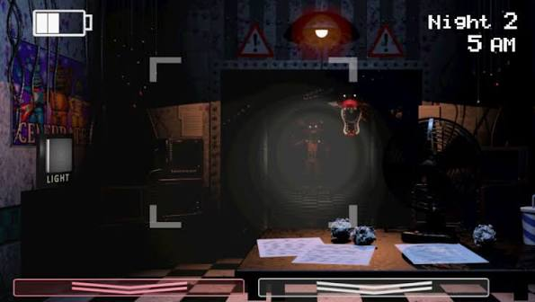
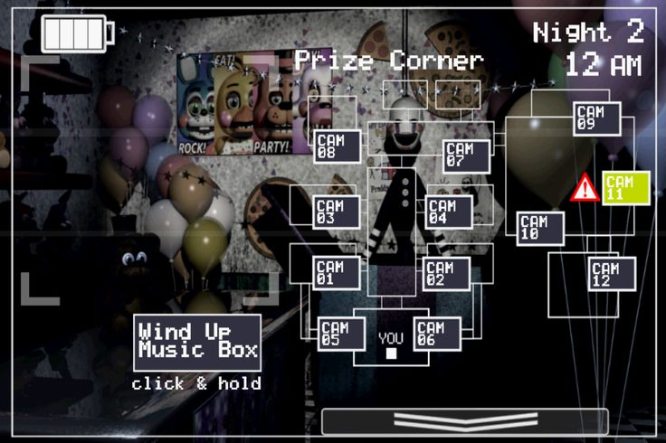
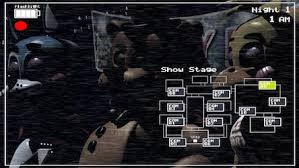
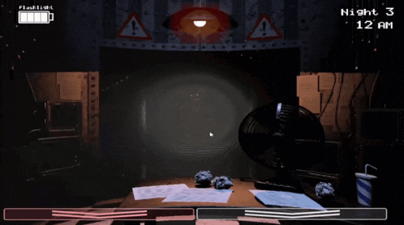

Resumo do jogo
O segundo jogo de FNaF foi criado com um intuito de trazer mais personagens, mais mecânicas que deixam tudo mais desafiador. Dessa vez não haverá portas. Existirão mais formas de se livrar dos animatrônicos. Dutos estarão abertos para que eles cheguem até você.
Durante o jogo
Conforme o passar das noites, o homem do telefone, Phone Guy, irá dar dicas, e você aprenderá mecânicas distintas para defender-se dos animatrônicos. Um exemplo é fechar a porta para que eles não entrem na sala.
Algumas imagens do jogo:




Algumas mecânicas são diferentes e serão tratadas de formas diferentes do primeiro jogo.
AS MECÂNICAS:
Uma diferença notável entre a jogabilidade, controles e gameplay entre o primeiro FNAF e este, são as mecânicas.
Elas mudam bastantes as chances e as táticas de sobrevivência com o passar das noites, exigindo as vezes mais habilidade, rapidez e estratégias.
MÁSCARA DO FREDDY
A primeira coisa que se nota de diferente, é o botão do lado esquerdo ao da câmera, que basicamente te puxa a máscara do animatrônico Freddy. Isso confunde o sistema dos animatrônicos, e eles não te identificam como um guarda noturno. Exceto pelo Withered Foxy e a Marionete/Puppet.

LANTERNA
A segunda mecânica que nos é demonstrada em um tutorial rápido é a lanterna. Em computadores basta clicar a tecla CTRL que a lanterna ligará no corredor, no celular clique no meio onde estará a mira. Servirá justamente ao Withered Foxy, quebrando seu sistema de reconhecimento.
